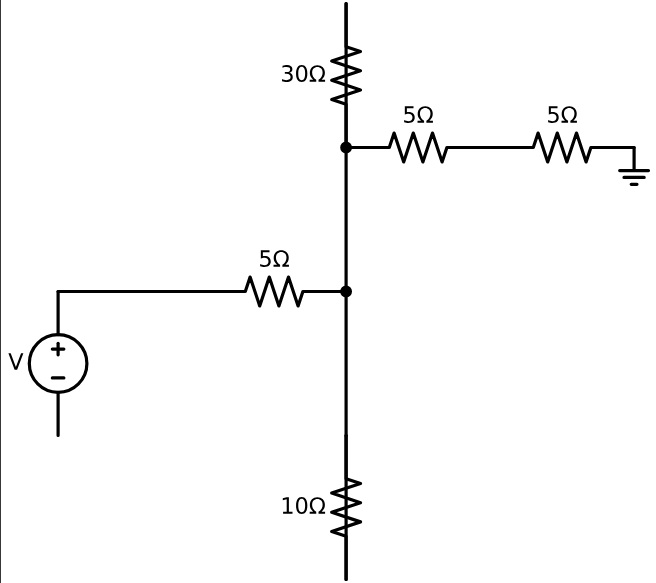

Problem 1
Equivalent Resistance Using Graph Theory
Motivation
The equivalent resistance between two terminals (START and END) in an electrical network is a central concept in circuit analysis. While basic configurations can be handled with simple series and parallel rules, complex circuits with many junctions and loops require a more robust approach.
Using graph theory, we model the circuit as a graph where: - Nodes represent junctions, - Edges represent resistors, - Weights on edges represent resistance values.
This transforms circuit simplification into a graph-reduction problem. The process can be fully automated and is essential for tasks like circuit simulation, network optimization, and computer-aided design.
1. Graph-Based Circuit Simplification
Step-by-Step Approach
Given a weighted undirected graph:
- START and END are the terminals.
- Each edge \(e_{ij}\) has a resistance \(R_{ij}\).
- The goal is to compute a single equivalent resistance \(R_{\text{eq}}\) between START and END.
We apply the following reduction rules iteratively:
1.1 Series Reduction
If a node (not START or END) has exactly two neighbors and connects only to them, its resistors are in series.
Replace this subgraph:
A -- R₁ -- B -- R₂ -- C
with:
A -- R₁₂ -- C
Where:
1.2 Parallel Reduction
If multiple resistors connect the same two nodes, they are in parallel.
Replace this:
A -- R₁ -- B A -- R₂ -- B
with:
A -- R_{\text{eq}} -- B
Where:
1.3 Iteration
Repeat series and parallel simplification until only one resistor remains between START and END:
2. Python Algorithm
Step 1: Original Circuit (with parallel and series resistors)
!pip install schemdraw
import schemdraw
import schemdraw.elements as elm
# Step 1: Original Circuit
with schemdraw.Drawing() as d:
d.config(unit=2.5)
d += elm.SourceV().up().label('V', loc='top')
d += elm.Line().right()
d += elm.Resistor().label('5Ω').right()
d += elm.Dot()
d.push()
d += elm.Line().down()
d += elm.Resistor().label('10Ω')
d += elm.Line().up()
d.pop()
d += elm.Line().up()
d += elm.Resistor().label('30Ω')
d += elm.Line().down()
d += elm.Dot()
d += elm.Resistor().label('5Ω').right()
d += elm.Resistor().label('5Ω').right()
d += elm.Ground()

Step 2: After Parallel Reduction
import schemdraw
import schemdraw.elements as elm
# Step 2: Parallel Resistors Replaced with Equivalent
with schemdraw.Drawing() as d:
d.config(unit=2.5)
d += elm.SourceV().up().label('V', loc='top')
d += elm.Line().right()
d += elm.Resistor().label('5Ω').right()
d += elm.Resistor().label('7.5Ω').right().label('(10Ω || 30Ω)', loc='bottom')
d += elm.Resistor().label('5Ω').right()
d += elm.Resistor().label('5Ω').right()
d += elm.Ground()

Step 3: Final Equivalent Resistance Only
import schemdraw
import schemdraw.elements as elm
# Step 3: Fully Reduced to One Equivalent Resistor
with schemdraw.Drawing() as d:
d.config(unit=2.5)
d += elm.SourceV().up().label('V', loc='top')
d += elm.Line().right()
d += elm.Resistor().label('22.5Ω').right().label('(5+7.5+5+5)', loc='bottom')
d += elm.Ground()

3. Example Analysis
Given the test circuit:
- START → A: \(R = 2\,\Omega\)
- A → B: \(R = 3\,\Omega\)
- B → END: \(R = 4\,\Omega\)
- A → END: \(R = 6\,\Omega\)
Step-by-step:
-
Combine A–B and B–END (series):
\(R_{\text{AB-END}} = 3 + 4 = 7\,\Omega\) -
A has two paths to END:
- One path is: \(7\,\Omega\)
-
Other path is: \(6\,\Omega\)
-
Combine those in parallel:
$$ \frac{1}{R_{\text{eq}}} = \frac{1}{6} + \frac{1}{7} = \frac{13}{42} \Rightarrow R_{\text{eq}} \approx 3.23\,\Omega $$
- Finally, add START–A:
$$ R_{\text{total}} = 2 + 3.23 = 5.23\,\Omega $$
4. Conclusion
We showed how to:
- Use graph theory to model electrical circuits.
- Detect and simplify series and parallel connections.
- Automate the process using Python and
networkx.
This method scales well to arbitrarily complex networks and is highly applicable to modern engineering workflows such as simulation, layout, and optimization of electrical systems.